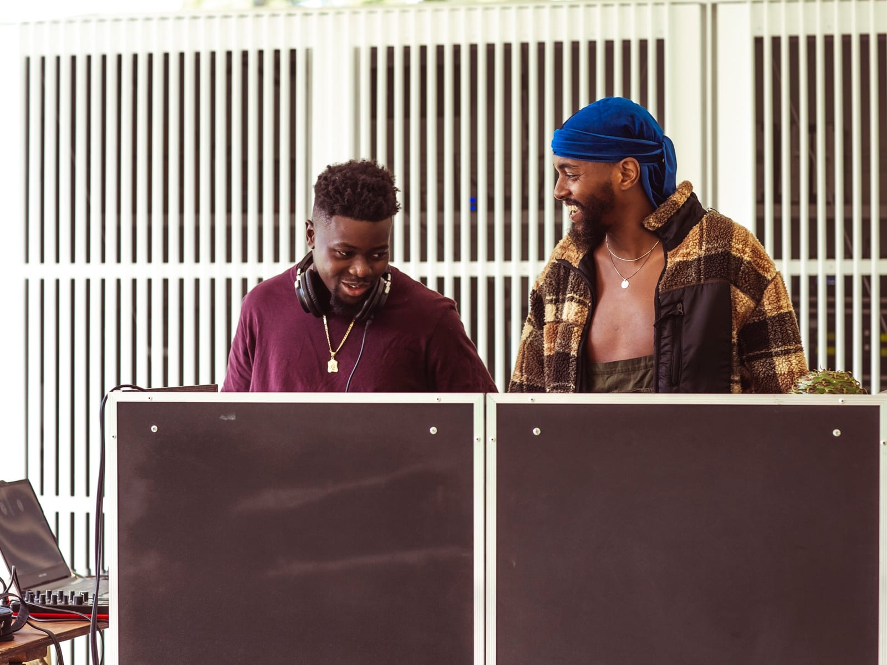
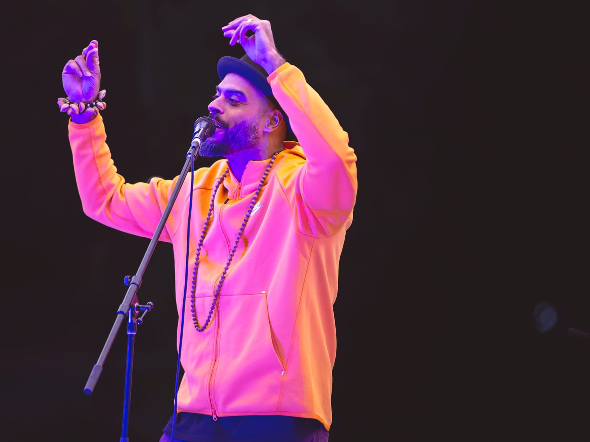

Production & Curation
Meeting Place - MPavilion


Programmed and produced a music showcase for MPavilion’s Friday Sunset Series, featuring African diaspora artists Cool Out Sun, Soli, Amadou and African Love Grass. Led the project from planning through delivery, including developing the programme schedule and set times, preparing the marketing plan, managing the budget, and overseeing on-site coordination and event logistics. MPavilion is an annual architectural and cultural initiative by the Naomi Milgrom Foundation, bringing internationally renowned architects to Melbourne to create public spaces for creative and community exchange. Alongside each pavilion, a free programme of music, art, performance and design activates Queen Victoria Gardens and connects audiences with local and international artists.
- RoleCurator & Producer